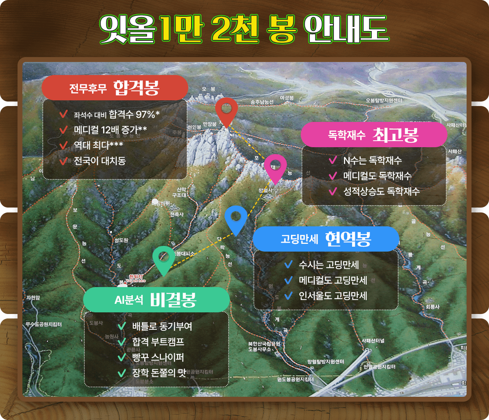
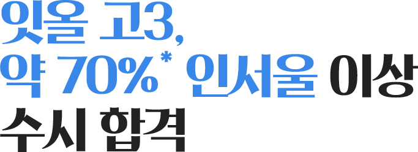

123

본 결과는 최종 합격자를 기준으로 집계하였으며, 지속적으로 업데이트될 예정입니다. 본 수치는 중복 합격수가 적용되어 있습니다.
최종 업데이트 : 2024년 3월 28일 16시 기준 오프라인, 온라인 합산 12,188
합격수 : 합격증 및 합격을 증빙할 수 있는 모든 디지털 자료를 포함한 취합 수
* 전국 좌석수 대비 합격수 97% : 2024년 3월 28일 16시 기준 잇올 스파르타 전국센터 좌석수 대비 2024년 3월 28일까지 취합된 2024 대입 합격수 증 숫자의 비율
** 메디컬 12배 증가 : 2019 대비 2024 잇올 메디컬 합격수 비율 11.7배의 반올림
최종 업데이트 : 2024년 3월 28일 16시 기준 오프라인, 온라인 메디컬 합격증 합산 888장
*** 역대 최다: 2019 이후 해당 학년도 합격수 대비 2024 합격수 기준
모든 합격수의 범위 : SKY카포, 서성한이 중경외시를 포함


좌석수 대비합격수 97%
2024 잇올 합격수
12,188
2024 전국 잇올 좌석수
12,521
전국 좌석수 대비

잇올, 그 이름 하나로 증명되는 합격 플랫폼!
잇올 합격결과 데이터 확인하기
잇올의 경쟁자는 잇올 뿐!
2019 대비 2024 합격수 증가 추이
2019~2024 전체 합격수 기준
잇올의 합격수
본 결과는 최종 합격자를 기준으로 집계하였으며, 지속적으로 업데이트될 예정입니다. 본 수치는 중복 합격수가 적용되어 있습니다.
최종 업데이트 : 2024년 3월 28일 16시 기준 오프라인, 온라인 합산 12,188장
전국 좌석수 대비 합격수 : 2024년 3월 28일 기준 잇올 스파르타 전국센터 좌석수 대비 2024년 3월 28일까지 취합된 2024 대입 합격증 취합 수
*합격수 : 합격증 및 합격을 증빙할 수 있는 모든 디지털 자료를 포함한 취합 수
**합격수 9.5배 : 2019 (1,289) 대비 2024 (12,188) 잇올 합격수 비율 9.45배의 반올림
메디컬 12배 증가
최근 6년간 메디컬 합격수 2,843**!!
본 결과는 최종 합격자를 기준으로 집계하였으며, 지속적으로 업데이트될 예정입니다. 본 수치는 중복 합격수가 적용되어 있습니다.
최종 업데이트 : 2024년 3월 28일 16시 기준 오프라인, 온라인 메디컬 합격증 합산 888장
합격수 : 합격증 및 합격을 증빙할 수 있는 모든 디지털 자료를 포함한 취합 수
*12배 증가 : 2019 (72) 대비 2024 (888) 잇올 메디컬 합격수 비율
**2,843 : 2019학년도~2024학년도 메디컬 합산 합격증 기준
역대 최다
서울대 합격수
SKY카포 합격수
서성한이
중경외시 합격수
SKY카포부터 서성한이 중경외시까지
평균 약 11배** 증가
중경외시 합격수
본 결과는 최종 합격자를 기준으로 집계하였으며, 지속적으로 업데이트될 예정입니다. 본 수치는 중복 합격수가 적용되어 있습니다.
최종 업데이트 : 2024년 3월 28일 16시 오프라인, 온라인 각 대학별 합산 기준
모든 합격수의 범위 : SKY카포, 서성한이 중경외시를 포함
합격수 : 합격증 및 합격을 증빙할 수 있는 모든 디지털 자료를 포함한 취합 수
*역대 최다: 2019 이후 해당 학년도 합격수 대비 2024 합격수 기준
**약 11배 증가 기준 : 2019 대비 2024 각 대학별(SKY카포, 서성한이 중경외시) 합격수 비율
***7.3배 : 2020 (24) 대비 2024 (176) 서울대 합격수 비율
****11배 : 2019(73) 대비 2024 (804) SKY카포 합격수 비율
*****11배 : 2019 (213) 대비 2024 (2458) 서성한이 중경외시 합격수 비율
전국이 대치동
5년 연속 잇올 스파르타 센터
100% 메디컬SKY카포 합격
본 결과는 최종 합격자를 기준으로 집계하였으며, 지속적으로 업데이트될 예정입니다. 본 수치는 중복 합격수가 적용되어 있습니다.
최종 업데이트 : 2024년 3월 28일 16시 기준 오프라인, 온라인 합격증 합산 기준
관이 나뉘어져 있는 센터의 경우 통합으로 합격증 산출
합격수 : 합격증 및 합격을 증빙할 수 있는 모든 디지털 자료를 포함한 취합 수
*전국 모든 센터 메디컬SKY카포 합격 : 2020학년도~2024학년도 메디컬SKY카포 합격증 기준

N수는 독학재수
성상현 한양대 의대 합격!!
23수능 국어3등급 ▶ 24수능 한양대 의대 합격!
재종에서 잇올로! 역시 N수는 독학재수!
메디컬도 독학재수
N수생들의 메디컬 맛집
메디컬 합격비율 약
본 결과는 최종 합격자를 기준으로 집계하였으며, 지속적으로 업데이트될 예정입니다. 본 수치는 중복 합격수가 적용되어 있습니다.
최종 업데이트 : 2024년 3월 28일 16시 기준 오프라인, 온라인 합격증 합산 기준
합격수 : 합격증 및 합격을 증빙할 수 있는 모든 디지털 자료를 포함한 취합 수
*잇올 메디컬 합격수 중, N수가 약 70% : 2024년 3월 28일까지 집계된 전체 메디컬 합격수 중 출생년도 2005년 이하 기준의 메디컬 합격수를 제외한 비율
성적상승도 독학재수
잇올에서 N수라면 성적 떡상 문제없어!
성적상승률
본 결과는 최종 합격자를 기준으로 집계하였으며, 지속적으로 업데이트될 예정입니다.
본 수치는 중복 합격수가 적용되어 있습니다.
최종 업데이트 : 2024년 3월 28일 16시 기준 오프라인, 온라인 합격증 합산 기준
합격수 : 합격증 및 합격을 증빙할 수 있는 모든 디지털 자료를 포함한 취합 수
*잇올 N수, 성적상승률 94% : 2024년 3월 28일까지 집계된 전체 합격수 중 2023 수능 대비 2024 수능 성적상승률
수시는 고딩만세
고등학생 상위권 대학 수시 합격 51%*
둘 중 하나 메디컬 포함 상위권 대학
본 결과는 최종 합격자를 기준으로 집계하였으며, 지속적으로 업데이트될 예정입니다.
본 수치는 중복 합격수가 적용되어 있습니다.
최종 업데이트 : 2024년 3월 28일 16시 기준 오프라인, 온라인 합격증 취합 기준
합격수 : 합격증 및 합격을 증빙할 수 있는 모든 디지털 자료를 포함한 취합 수
*고등학생 상위권 대학 수시 합격 51.2% : 합격증 제출 인원, 출생년도 2005년 이하로 확인된 인원 중 메디컬SKY카포, 서성한이 중경외시, 과기원, 경찰사관, 교대 수시 합격 비율
메디컬도 고딩만세
이현승 고려대 의대 수시 합격!!
고려대 의대 수시 합격! 유신고 전교 1등(2023년 1월 기준)의 윈터 전략은?
인서울도 고딩만세

썸머/윈터스쿨로 성적상승과 합격까지~
본 결과는 최종 합격자를 기준으로 집계하였으며, 지속적으로 업데이트될 예정입니다. 본 수치는 중복 합격수가 적용되어 있습니다.
최종 업데이트 : 2024년 3월 28일 16시 기준 센터 오프라인, 온라인 합격증 취합 기준
합격수 : 합격증 및 합격을 증빙할 수 있는 모든 디지털 자료를 포함한 취합 수
*약 70% : 합격증 제출 인원 중 출생년도 2005년 이하로 확인된 인원 중 서울소재 대학교와 서울에 소재하지 않은 메디컬 카포 과기원/교대/사관/경찰/교원대 포함 수시 합격 비율 70.57%
AI

YOU
잇올 스파르타가 2024학년도 대학 입시에서 1만 2천의 합격수를 배출한 비결은 무엇일까?
ChatGPT
잇올 스파르타가 2024학년도 대학 입시에서 1만 2천의 합격수를 배출한 비결은 아마도 다음과 같은 요인들에 기인할 수 있습니다. :
- 관리와 몰입 : 철저한 관리를 통해 몰입할 수 있는 최적의 환경을 제공하였습니다.
- 배틀로 동기부여 : 잇올 빌보드와 순공배틀로 강한 동기부여를 제공하였습니다.
- 합격 부트캠프 : 수능실전 시뮬레이션을 통해 학생들이 자신감을 갖고 실전에
대응할 수 있도록 지속적으로 훈련시켰습니다. - 빵꾸 스나이퍼 : 합격전략 연구소 잇올 랩의 빅데이터 입시분석 프로그램을 통해 4칸도
서울대 의대에 합격 시켰습니다. - 장학 돈쭐의 맛 : 6년 간 150억 이상의 장학금을 지원하여 2024수능에서 올키 둘 중 하나를 메디컬에 합격시켰습니다.
배틀로 동기부여
6월 빌보드 199등 서울대 의대 합격
9월 빌보드 396등 충북대 의대 합격
잇올 빌보드 : 잇올 공식모의고사 석차 차트
빌보드 1등이던 내가 9평 133등?! 경희대 의대 합격으로 이어진 동기부여 스토리!
TOP 100 메디컬 합격자들
하루 평균 10시간*** 순공 시간 확보
순공배틀 : 재원생 대상 누적 순수공부시간 경쟁 시스템
본 결과는 최종 합격자를 기준으로 집계하였으며, 지속적으로 업데이트될 예정입니다. 본 수치는 중복 합격수가 적용되어 있습니다.
최종 업데이트 : 2024년 3월 28일 16시 기준 센터 오프라인, 온라인 합격증 취합 기준
합격수 : 합격증 및 합격을 증빙할 수 있는 모든 디지털 자료를 포함한 취합 수
*빌보드 랭커 메디컬 합격률 95% : 2024년 3월 28일 수능 합격증 취합 파일 중 2023년 잇올 공식 빌보드 1,2차 유지 학생 기준
**100% 성적상승: 순공배틀 참가자 중 2024 9모 성적표(표준점수 기준), 2024 수능 성적표(표준점수 기준) 제출자 기준
***하루 평균 10시간 : 2023년 9월 6일 ~ 9월 13일 순공배틀 진행 중 키오스크 기록 기준
합격 부트캠프
잇올 공식모의고사, 실전바이오리듬, 학교프로젝트!!
※ 부트캠프란?
명문대에 합격한 수많은 선배들이 극찬하는 잇올 시스템의 정점으로 잇올 공식모의고사와
실전바이오리듬, 학교프로젝트를 통해 실전 연습 기회 및 실전 능력 배양 가능한 완벽한 수능실전 시뮬레이션


본 결과는 최종 합격자를 기준으로 집계하였으며, 지속적으로 업데이트될 예정입니다. 본 수치는 중복 합격수가 적용되어 있습니다.
최종 업데이트 : 2024년 3월 28일 16시 기준 센터 오프라인, 온라인 합격증 취합 기준
합격수 : 합격증 및 합격을 증빙할 수 있는 모든 디지털 자료를 포함한 취합 수
부트캠프 참여자 : 2023년 잇올 공식모의고사, 실전바이오리듬, 학교프로젝트 중 2개 이상 참여자
*48번 : 1년간 실시하는 전국 센터 재원생 대상 잇올 공식모의고사, 실전바이오리듬, 학교프로젝트 시행 횟수 총합
빵꾸 스나이퍼
잇올 9개월 만에 표준점수 52점 상승! 두번의 승강심사 서울대 의대 정시 합격!!
본 결과는 최종 합격자를 기준으로 집계하였으며, 지속적으로 업데이트될 예정입니다. 본 수치는 중복 합격수가 적용되어 있습니다.
최종 업데이트 : 2024년 3월 28일 16시 기준 센터 오프라인, 온라인 합격증 취합 기준
합격수 : 합격증 및 합격을 증빙할 수 있는 모든 디지털 자료를 포함한 취합 수
*4칸 : J사 결과값에 대한 시크릿코드2 입력 근거와 합격자 후기 근거로 취합함
장학 돈쭐의 맛
150억 장학 돈쭐로 메디컬 대거 합격!!**
올키란?
잇올의 장학 시스템으로 입학 장학생의 경우 재원 기간동안 장학을
유지하는 기준이 되며, 입학 시 입학 장학 기준을 충족하지 못했더라도
승강심사 기준에 따라 잇올의 장학생으로 추가 선발될 수 있는 장학 시스템
본 결과는 최종 합격자를 기준으로 집계하였으며, 지속적으로 업데이트될 예정입니다. 본 수치는 중복 합격수가 적용되어 있습니다.
최종 업데이트 : 2024년 3월 28일 16시 기준 센터 오프라인, 온라인 합격증 취합 기준
*둘 중 하나 메디컬! 넷 중 하나 의대 : 2024년 3월 28일 올키 장학생 (올키프리미엄, 올키, 반키, 내신올키) 중 제출된 합격한 인원에서 합격증 제출 수 기준
메디컬 비율 : 50.9% / 의대 비율: 25.1%
**150억 장학 돈쭐로 메디컬 대거 합격 : 2018년 1월~2023년 12월 기준 누적 재원생 연 인원 590,604명 중, 128,596명의 학생들에게 14,279,843,124원 장학 혜택 제공
합격스토리